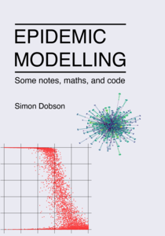

"Epidemic modelling: Some notes, maths, and code", my book about using network science to model epidemics, is now featured in the gallery of the Executable Books project.
The Executable Books Project is a project whose goal (according to their site) is "to build tools that facilitate creating professional computational narratives (books, lecture series, articles, etc.) using open source tools". In particular they manage Jupyter Book, which is the tool I used to write "Epidemic modelling".

The gallery can be found at:
https://executablebooks.org/en/latest/gallery.html
and has links to an impressive range of impressive texts, ranging from introductions to data science to deeply technical descriptions of scientific tools and methods. It's incredible that everything on display is generated, and published, as open source.